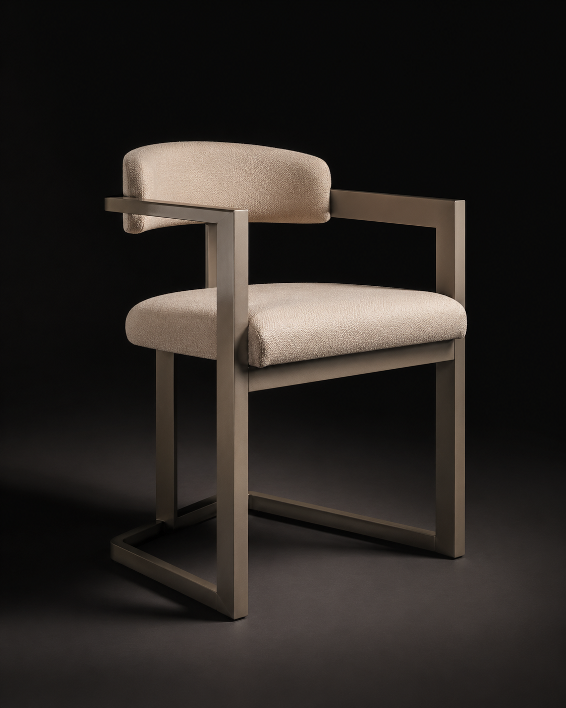
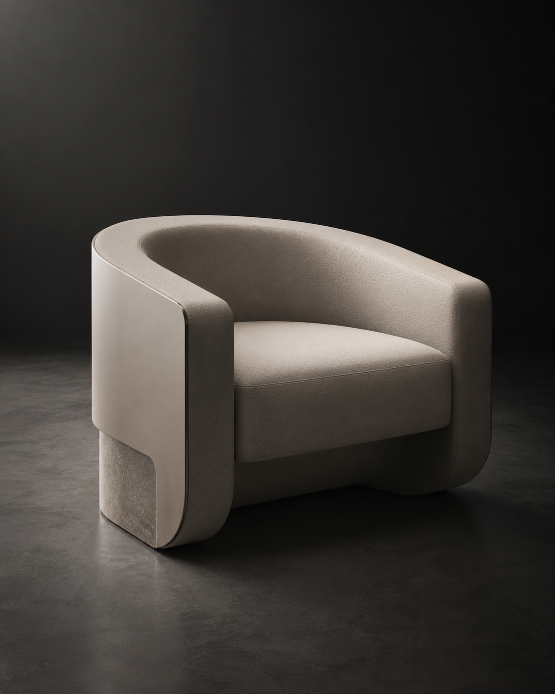
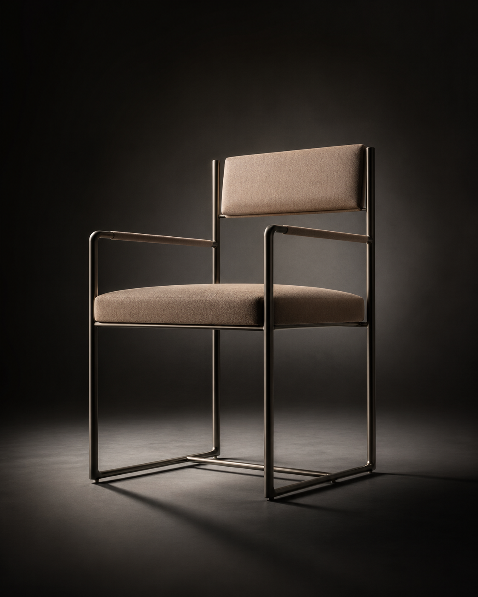

01
Stability
제품의 구조, 무게중심, 사용 상황을 기준으로 실제로 안정적인지 분석합니다.
Physics-Aware AI Product Design Studio
아름다운 디자인을 넘어, 실제로 만들 수 있는 제품을 설계합니다.
Feature
예쁜 이미지만으로는 실제 제품을 만들 수 없습니다. 이 앱은 구조, 생산성, 시장성까지 함께 읽어 제품 결정을 더 현실적으로 만듭니다.
Product
제품의 구조, 무게중심, 사용 상황을 기준으로 실제로 안정적인지 분석합니다.
생산 공정, 조립 난이도, 부품 구성까지 고려해 제조 가능성을 평가합니다.
사용자 맥락과 가격 포지셔닝을 바탕으로 시장성이 있는 콘셉트인지 판단합니다.
Target Users
아이디어를 실제 제품으로 만드는 사람들을 위해 설계되었습니다.
제품 아이디어를 빠르게 검증하고 실패 비용을 줄여야 하는 팀
아름다움과 실제 제작 가능성을 동시에 고민하는 디자이너
구조, 재료, 제조 공정까지 고려하는 엔지니어
The next question
좋은 제품 콘셉트는 만드는 사람의 판단에서 끝나지 않습니다. 목표 소비자가 실제로 선택할 가능성까지 확인해야 합니다.
Consumer Preference Analysis
목표 소비자의 취향을 분석해, 선택받을 가능성이 높은 디자인을 추천합니다.

Concept A

Concept B

Concept C
Soft Volume이 가장 높은 선택 가능성을 보입니다.
Demo
AI가 예쁜 화면을 넘어서, 제품 콘셉트의 현실성을 한 화면에서 읽어냅니다.
Comparison
시각 결과물은 빠르게 만들지만, 실제 제품 판단에 필요한 구조와 생산, 시장 해석은 충분히 보여주지 못합니다.
Image-first workflow
Weak physical validation
Limited manufacturing context
디자인 감도와 함께 물리 가능성, 제조 가능성, 시장성을 동시에 읽어 더 설득력 있는 제품 결정을 돕습니다.
Physics-aware evaluation
Manufacturing-ready insight
Consumer preference ranking
Final
AI로 더 현실적인 제품 디자인을 시작하세요.